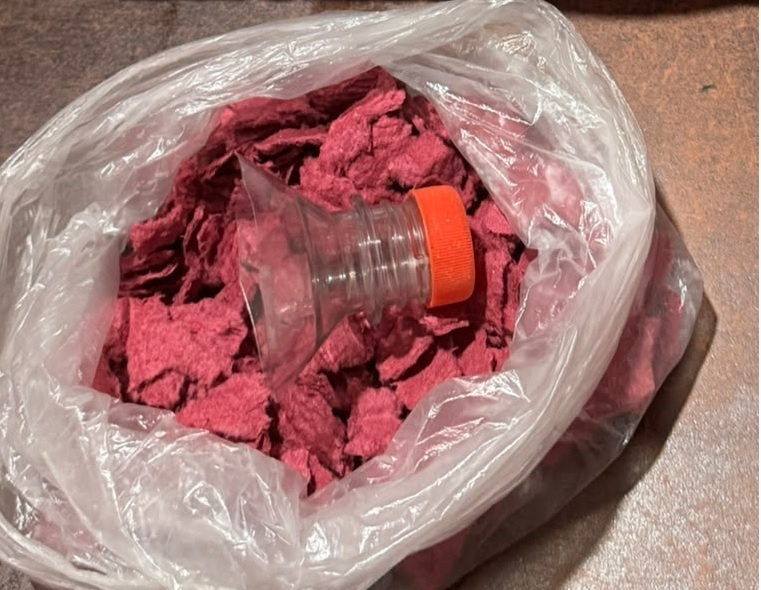
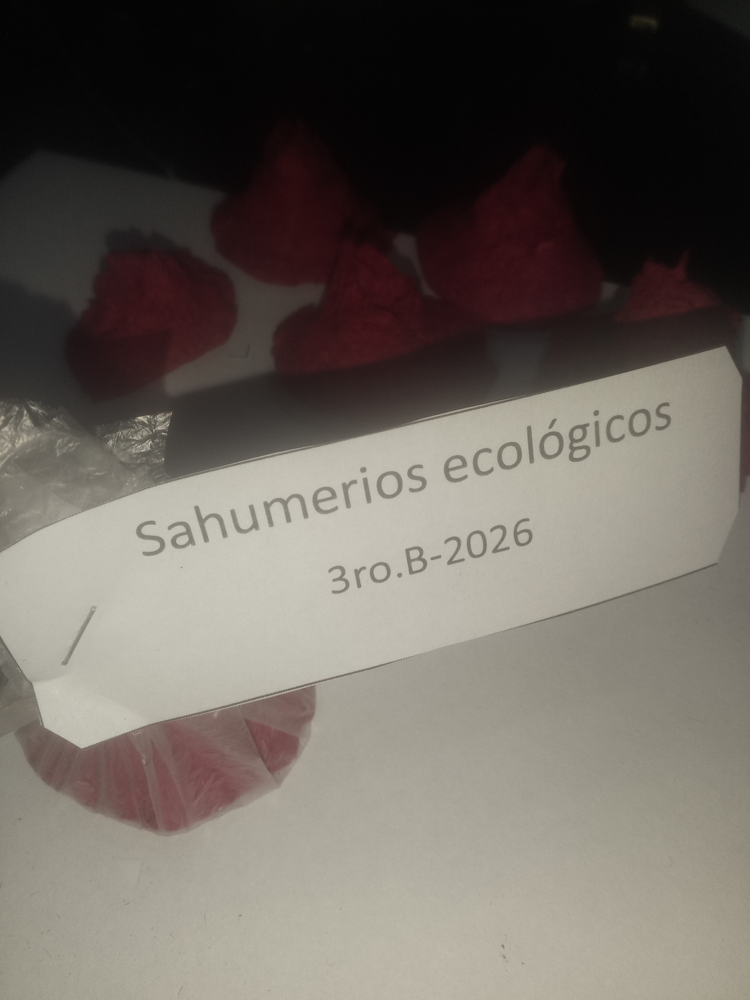

La idea
Las cajas de huevos son cartón de pulpa de papel: se tiran por miles y casi nadie las reutiliza. Nos preguntamos si ese mismo material, triturado y mezclado con esencias, podía quemarse como un sahumerio.

El primer prototipo (MVP)

Un MVP es la versión más simple que sirve para probar si la idea funciona. El nuestro fue un primer sahumerio hecho a mano, sin moldes ni terminación.
Pruebas y mejoras
Probamos distintas mezclas, tiempos de secado y cantidades de esencia hasta lograr un sahumerio que se sostenga, queme parejo y huela bien.

Aromas
- Citronela
- Lavanda
- Otras esencias
Cómo se hace, paso a paso
-
Recolectar las cajas
Juntamos cajas de huevos limpias y secas.

-
Triturar y remojar
Rompemos el cartón en trozos y lo dejamos en agua.

-
Armar la pasta
Escurrimos y mezclamos hasta obtener una pasta moldeable.

-
Agregar la esencia
Incorporamos citronela, lavanda u otra esencia.

-
Dar forma
Moldeamos cada sahumerio a mano o con molde.

-
Secar
Los dejamos secar hasta que queden firmes.

El producto a la venta

- Presentación
- —
- Aromas
- Citronela, lavanda y más
- Precio
- —
Qué cambia con este producto
Cada caja que se convierte en sahumerio es una caja que no termina en la basura.